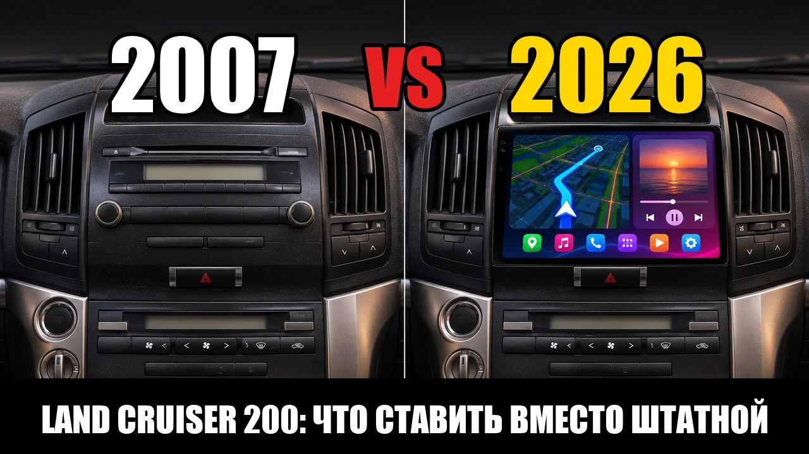
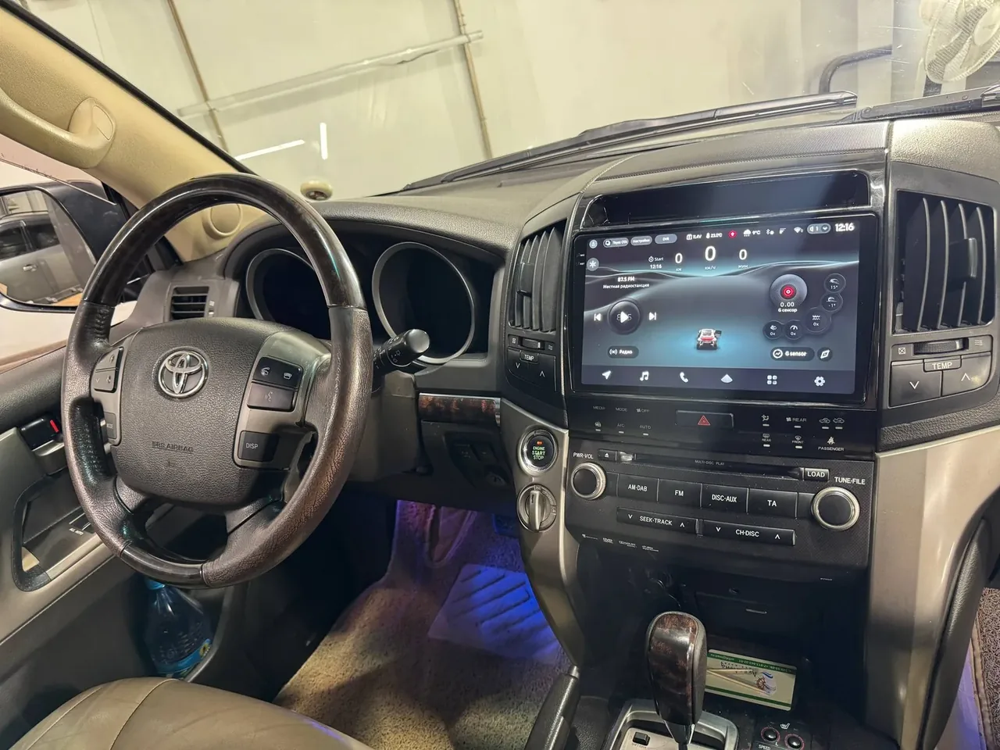
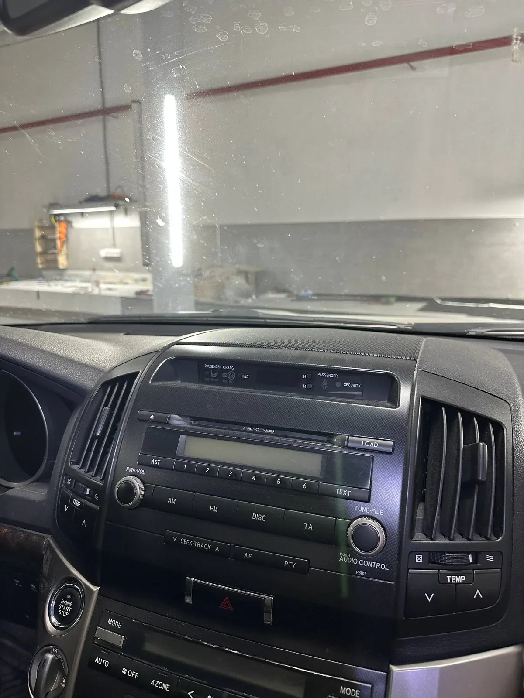
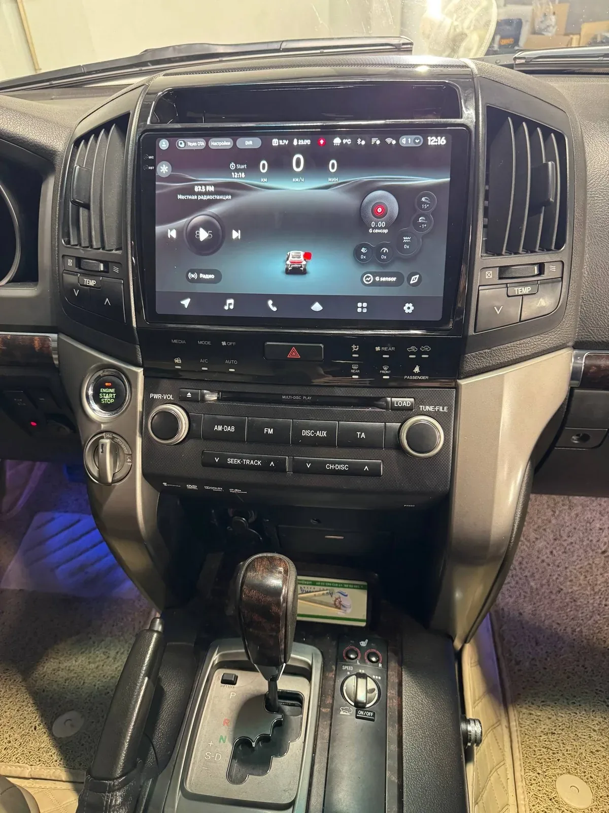
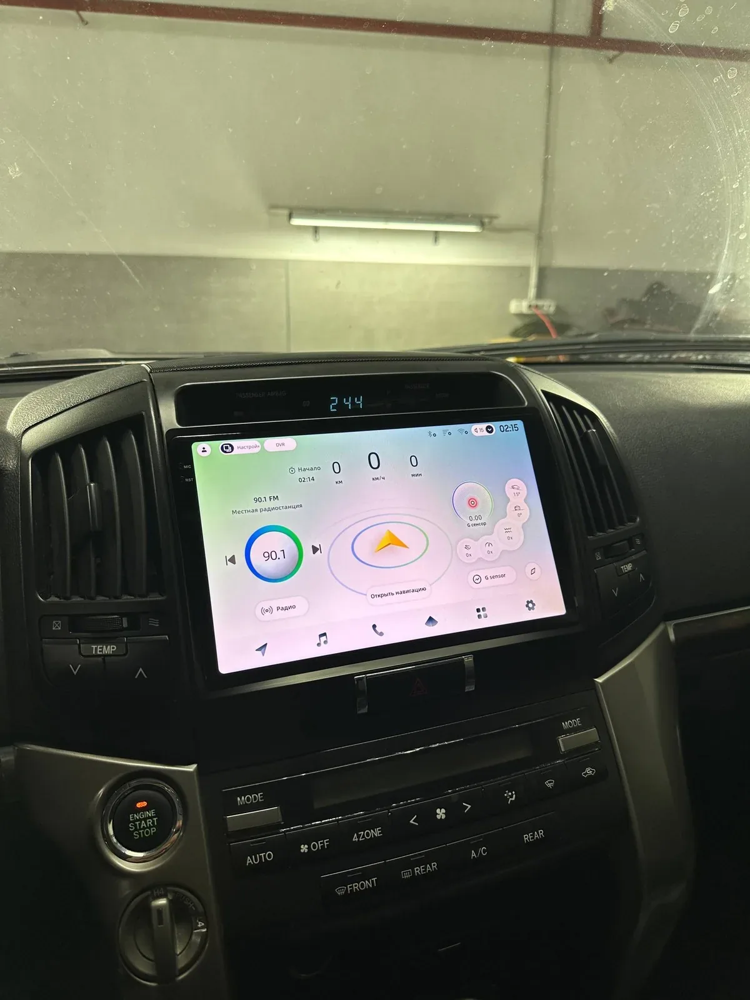

Лучшая магнитола для Ленд Крузер 200: что ставить вместо штатной в 2026 году

Land Cruiser 200 переживёт ещё одного хозяина, а магнитола в нём осталась в 2007 году.
Почти 2,7 тонны машины, а навигатор – телефон на присоске. Во дворе паркуетесь по памяти: капот длинный, что за бампером, не видно.

Коротко: что ставить на Land Cruiser 200
Лучшее решение для мультимедиа «двухсотого» – Android-магнитола Teyes с экраном 12,3 дюйма в штатную рамку. Экран встаёт в верхний проём консоли, климат и аварийка остаются на своих кнопках, к магнитоле подключаются камеры, в том числе круговой обзор.
В каталоге TEYES Sibir под Land Cruiser 200 2007–2015 годов Teyes CC4 12.3" стоит от 50 950 ₽ – цена на сайте 18.11.2026, при оплате наличными. Установка головного устройства – от 4 500 ₽.
Мы ставили на «двухсотый» Teyes CC4 и CC4 Pro, работа с CC4 Pro – на фото выше.
Какой у вас Land Cruiser 200: Россия, ОАЭ или Япония
Land Cruiser 200 выпускали с сентября 2007 по март 2021 года. За это время у него было два рестайлинга.
- 2007–2012. В Россию на старте шли бензиновый V8 4.7 и дизельный V8 4.5.
- 2012. Первый рестайлинг: вместо 4.7 поставили бензиновый V8 4.6, обновили салон.
- 2015. Второй рестайлинг: светодиодные фары, другая решётка, новая центральная панель и новая мультимедиа.
Машины из ОАЭ собраны под рынок Ближнего Востока: там были ещё V6 4.0, а с 2011 года – V8 5.7. Машины для Японии сначала шли с V8 4.7, с апреля 2009 года – с V8 4.6.
Land Cruiser Prado – другая, меньшая машина, и рамка от него на «двухсотый» не встанет.
Что стояло в машине с завода
До рестайлинга 2015 года. В Японии в базе стояла магнитола с чейнджером на 6 дисков DVD/CD, MD-плеером и 9 динамиками. За доплату – навигация на жёстком диске с экраном 8 дюймов. На Land Cruiser 200 2011 года, который приезжал к нам, стояла магнитола с CD-чейнджером на 6 дисков и строчкой текста вместо экрана.

После рестайлинга 2015 года. В российских комплектациях «Комфорт», «Элеганс», «Люкс» и «Люкс Safety» – мультимедиа с экраном 8 или 9 дюймов в зависимости от комплектации, аудиосистема JBL и панорамный обзор.
Что раздражает владельцев в 2026 году
CD-чейнджер вместо экрана. Диски в машине возит мало кто, а навигатор и музыка живут в телефоне. Отсюда присоска на стекле и провод зарядки через салон.
Японская навигация. На машинах из Японии навигация ведёт по японским картам и говорит по-японски.
Японское радио. FM в Японии до 2011 года был 76–90 МГц, наш эфир – 87,5–108 МГц. Магнитола японской машины рассчитана на свой диапазон.
Парковка большой машины. Владельцы «двухсотых» приезжают к нам за камерами: передней, задней или круговым обзором из четырёх камер.
Три пути и какой выбрать
Оставить штатную и ездить с телефоном. Бесплатно, присоска и провод остаются.
Поставить отдельный навигатор и камеру. Ещё один экран на панели, ещё два провода.
Поставить Android-магнитолу Teyes в штатную рамку. Большой экран вместо старого блока, Яндекс Навигатор и 2ГИС, интернет по SIM-карте, CarPlay и Android Auto, картинка с камер на том же экране. Этот путь закрывает все пункты из списка выше.
Какую Teyes ставить на Land Cruiser 200
Цены каталога TEYES Sibir на 18.11.2026, со скидкой за наличный расчёт, для машин 2007–2015 годов:
- Teyes CC4 12.3" – от 50 950 ₽: экран QLED 1920×720, 6/64 ГБ, 4G, беспроводные CarPlay и Android Auto. Версия с круговым обзором 360 – от 61 130 ₽.
- Teyes LUX ONE – 52 500 ₽: экран 12,3 дюйма, 4/32 ГБ, 4G, CarPlay и Android Auto.
- Teyes CC4 Pro 12.3" – от 71 800 ₽: процессор Qualcomm, 8/128 ГБ.
Под CC4 в каталоге четыре варианта рамки, тип A–D. Какой нужен вашей машине, видно по фото центральной панели: у «двухсотого» есть варианты подключения F1 и F2, а ещё мастер смотрит, стоит ли у вас усилитель JBL, штатная камера или круговой обзор.
Если у вашей машины 2015 года и новее, пришлите фото панели – подберём комплект под неё.
Установка круговой системы 360 – от 25 000 ₽. При покупке мультимедиа Teyes камера заднего вида в подарок или скидка 1 000 ₽ на широкоугольную камеру, промокод САЙТ.
Что останется от штатного
- Климат и аварийка. На нашей машине 2011 года блок климата 4ZONE под экраном работает со своих кнопок.
- Кнопки на руле. На нашей работе с Teyes CC3 2K и камерами 360 они сохранились.
- Штатный блок кнопок. На машине 2012 года блок с кнопками радио и диска под экраном остался на месте.
- Отделка салона. Экран встаёт в штатный проём, панель не пилят.

Наши работы по Land Cruiser 200
Land Cruiser 200 2011 года, Teyes CC4 и две камеры. Экран встал на место магнитолы с CD-чейнджером, передняя камера – в решётку радиатора под эмблему, задняя выводит картинку на тот же экран.

Land Cruiser 200 2012 года, Teyes CC4 Pro и круговой обзор 360. Экран в верхнем проёме консоли, передняя камера – в решётке под эмблемой, боковая – под зеркалом. Эта машина на первом фото.
Teyes CC3 2K и четыре камеры кругового обзора. Камеры встали в штатные места, работа заняла один день, кнопки на руле сохранились. Смотреть работу на сайте
Teyes CC4 и AHD-камеры спереди и сзади в штатных местах. Смотреть работу на сайте
Всё по мультимедиа для «двухсотого» – что проверить до заказа, камеры, звук – на одной странице: магнитола и мультимедиа Toyota Land Cruiser 200. Комплект CC4 12.3" под Land Cruiser 200 2007–2015 с ценой – в каталоге.
TEYES Sibir, официальный установочный центр Teyes в Новосибирске: Сухарная 35 корпус 13, пн–пт с 11:00 до 19:00.